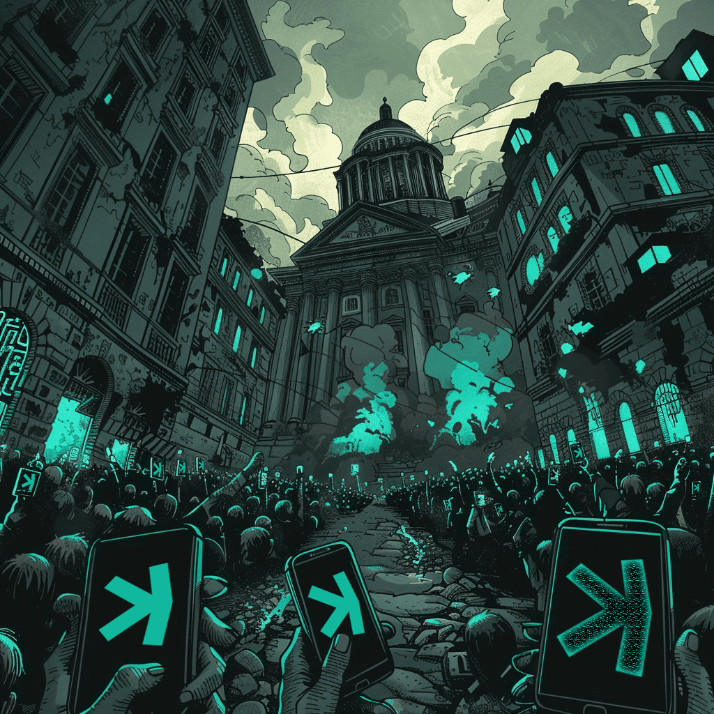

KASCAP


A passionate holder of Kaspa ($KAS) and a proud member of the Japanese Kaspa community, ShinKaspa. Actively involved in the development of NFT projects such as KasPunks and KASHIN, while also sharing clear and beginner-friendly explanations of the latest Kaspa technology updates and news in Japanese.
Driven by a strong belief in the potential of blockchain technology, the mission is to help grow and energize the Kaspa community alongside the evolution of the network itself.
To have discovered Kaspa at this moment in time feels nothing short of witnessing the eve of a revolution — and that conviction continues to inspire the journey every day.